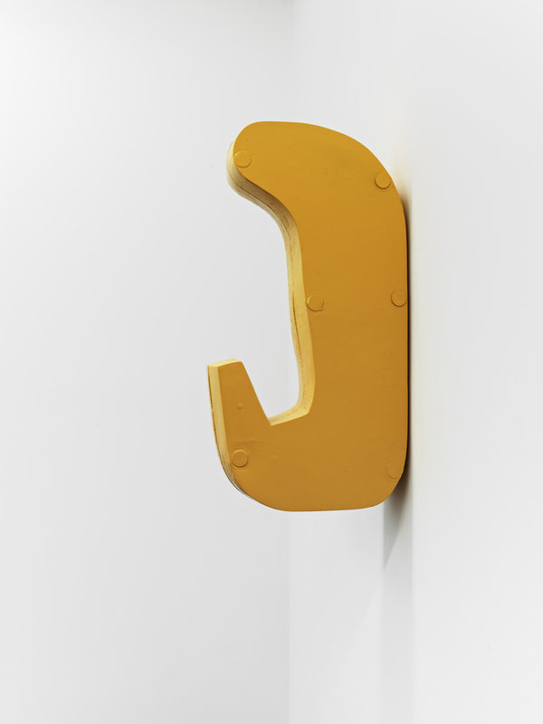
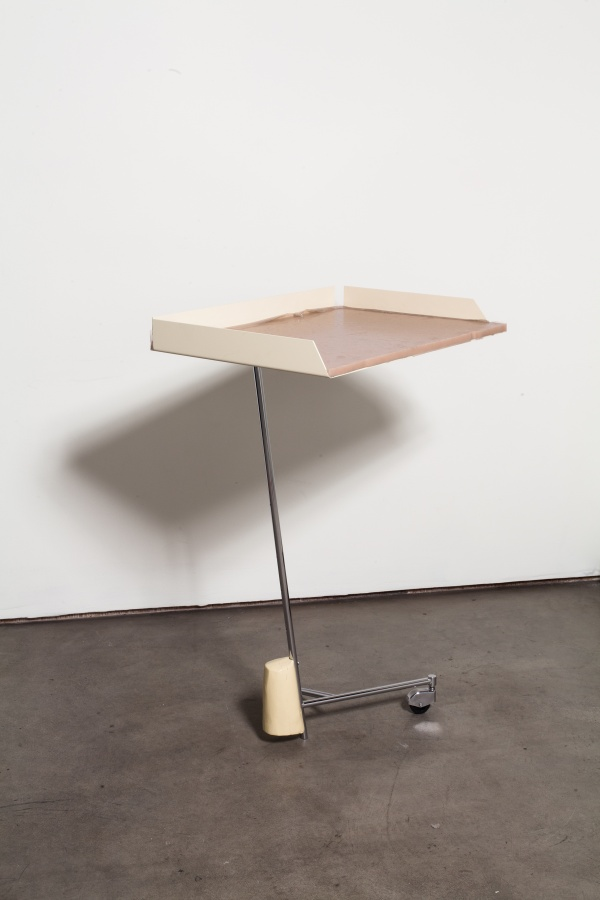
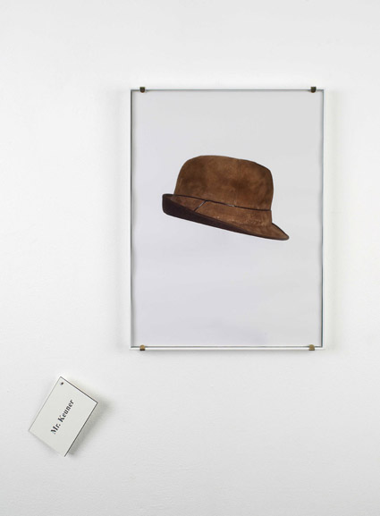

... This is The Wattis
Were in San
Francisco, a few blocks away from California College of
Arts at 360 Kansas Street (between 16th &
17th).
Today, it is kind of foggy and currently 78° F.
We are open until 7pm.
Soon, Markus Schinwald will be showing new work in the
gallery. The
exhibition opens tomorrow
Nairy Baghramian is in the apartment for the next six months
thinking and working towards an exhibition sometime in December.
Tropes and motifs drawn from a variety of sources—from interior design to physiology - investigation of
sculptural form. With a keen sense of traditional sculptural concerns such as material and volume, her work
plays on the supposed distinctions between decoration and function, industrial and handmade, commodity and art
object. Her work has also centered on the political and social relations implied by objects and the site of
display, in particular on the exhibition space as a type of interior, where affect and experience increasingly
conflict with luxury and leisure.
RESOURCES:



GO BACK HOME . . .
For the next year, Joan Jonas is on
our mind.
And , by
appointment, is Avery Singer, Loretta Fahrenholz, Lars Bang Larsen, and John
Zorn.
In the next three months, there are six events planned.
Meanwhile, an exhibition by Marie Angeletti opened four
days ago at Castillo Corrales. Have a look here.
20142615